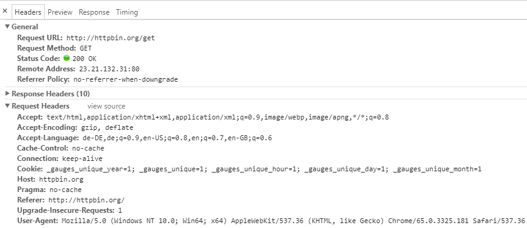
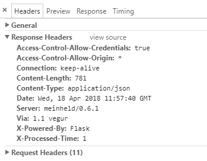

| Version 6.0.3 |
From version 4.2 onwards QF-Test offers the possibility to test web services.
Unlike the well known capture replay model here you must take care yourself to build the HTTP request and verify or validate the responses and/or the results. It is highly suggested to use the existing documentation of the web services you will test. For testing SOAP web services you have to build every HTTP request, there is no automated creation from a WSDL file.
The node 'Server HTTP request' is used for sending arbitary HTTP packets to a host.
The web services and web sites all use the Hypertext Transfer Protocol. It is a text based communication made of requests and responses. Here are the most useful and suprisingly short internet standards:
Hypertext Transfer Protocol -- HTTP/1.1
HTTP Authentication, 2 Basic Authentication Scheme
A list of currently supported HTTP request methods
|
|
|
||||||||||
|
| Table 19.1: Supported HTTP Methods | ||||||||||
Let's examine a simple browser GET request. When you open a web page/URL
in the browser, the browser makes a HTTP GET request for you. Here
is an example taken via the developer tools in Chrome.
The HTTP request consists of headers, URL and optional payload (body).
|
|  | ||
|
| Figure 19.1: Browser send HTTP GET | ||
The response from the server has response code, headers and optional payload.
|
|  | ||
|
| Figure 19.2: GET response | ||
Unlike web browsers when using the Server HTTP Request node you must
enter all required data in the respective places, e.g. headers
payload etc. Response handling should also be created if needed by using the variables
filled in by the server response.
Such examples can be found in the example test suite
demo/webservices
named
webservice_testing.qft.
The examples are built with the help of a HTTP Proxy used for development purposes. Such a proxy is Charles (https://www.charlesproxy.com/) or the free alternative James (https://github.com/james-proxy/james).
| Last update: 9/6/2022 Copyright © 1999-2022 Quality First Software GmbH |